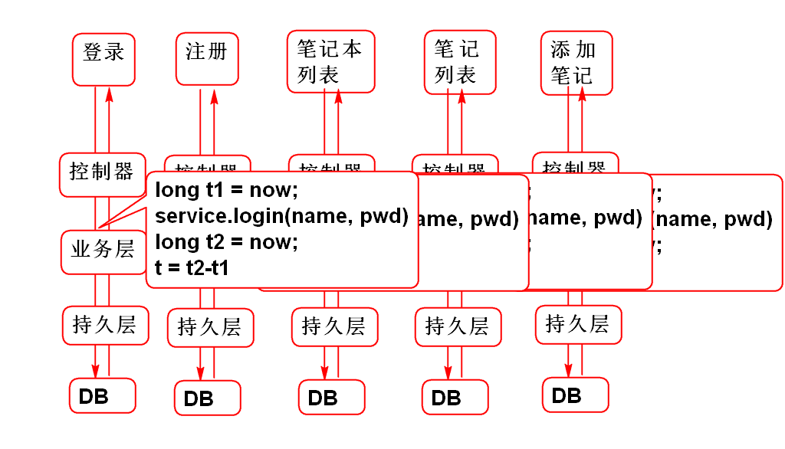
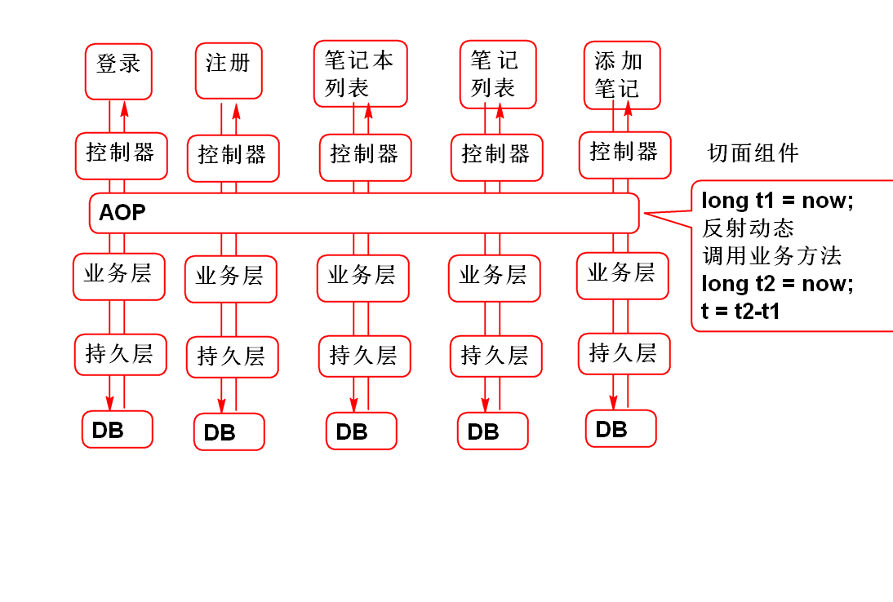

切面(儿): 事务的横截面
特点: 在不改变软件原有功能情况下为软件插入(扩展)横切面功能.
对于横向功能利用AOP可以大大简化软件的开发:
没有使用AOP:

使用AOP后:

导入Aspect J 包
Spring AOP 底层利用了AspectJ实现的!
<dependency>
<groupId>aspectj</groupId>
<artifactId>aspectjweaver</artifactId>
<version>1.5.3</version>
</dependency>
创建切面组件
@Component
@Aspect
public class DemoAspect {
//声明test方法将在 userService的全部方法之前运行
@Before("bean(userService)")
public void test(){
System.out.println("Hello World!");
}
}
配置Spring AOP: spring-aop.xml
<!-- 配置组件扫描 -->
<context:component-scan
base-package="cn.tedu.note.aop"/>
<!-- 使 @Aspect 注解生效 -->
<aop:aspectj-autoproxy/>
测试
Hello World! 将在userService的业务方法之前执行
目标方法: 被AOP拦截的业务方法, 称为目标方法
切面方法在执行时机：就在目标方法之前, 之后执行.
案例:
/**
* 创建一个切面组件, 就是一个普通的JavaBean
*/
@Component
@Aspect
public class DemoAspect {
//声明test方法将在 userService的全部方法之前运行
@Before("bean(userService)")
public void test(){
System.out.println("Hello World!");
}
@After("bean(userService)")
public void test2(){
System.out.println("After");
}
@AfterReturning("bean(userService)")
public void test3(){
System.out.println("AfterReturning");
}
@AfterThrowing("bean(userService)")
public void test4(){
System.out.println("AfterThrowing");
}
}
环绕通知, 可以在业务方法前后调用
案例:
@Component
@Aspect
public class Demo1Aspect {
/**
* 环绕通知 方法:
* 1. 必须有返回值值Object
* 2. 必须有参数 ProceedingJoinPoint
* 3. 必须抛出异常
* 4. 需要在方法中调用 jp.proceed()
* 5. 返回业务方法的返回值
* @param jp
* @return
* @throws Throwable
*/
@Around("bean(userService)")
public Object test5(ProceedingJoinPoint jp)
throws Throwable{
Object val = jp.proceed();
System.out.println("业务结果:"+val);
throw new UserNotFoundException(
"就是不让登录");
}
}
用于定位APO的切入位置: 用于指定切入到具体的方法类
类切入点
方法切入点 (execution: 执行)
注意: 一致统一的类和方法的命名规则将有助于编写有效的 切入点表达式!
代理模式: 不改变原有功能为软件扩展新功能.
AOP封装了动态代理功能, 提供了更加简便的使用方式!
经典面试问题:
AOP的底层技术是什么?
答案: 使用了 动态代理 技术.
关键点:

利用异常可以分析AOP调用原理:
java.lang.NullPointerException
at cn.tedu.note.service.impl.UserServiceImpl.login(UserServiceImpl.java:34)
at sun.reflect.NativeMethodAccessorImpl.invoke0(Native Method)
at sun.reflect.NativeMethodAccessorImpl.invoke(Unknown Source)
at sun.reflect.DelegatingMethodAccessorImpl.invoke(Unknown Source)
at java.lang.reflect.Method.invoke(Unknown Source)
at org.springframework.aop.support.AopUtils.invokeJoinpointUsingReflection(AopUtils.java:317)
at org.springframework.aop.framework.ReflectiveMethodInvocation.invokeJoinpoint(ReflectiveMethodInvocation.java:183)
at org.springframework.aop.framework.ReflectiveMethodInvocation.proceed(ReflectiveMethodInvocation.java:150)
at org.springframework.aop.framework.adapter.MethodBeforeAdviceInterceptor.invoke(MethodBeforeAdviceInterceptor.java:51)
at org.springframework.aop.framework.ReflectiveMethodInvocation.proceed(ReflectiveMethodInvocation.java:172)
at org.springframework.aop.interceptor.ExposeInvocationInterceptor.invoke(ExposeInvocationInterceptor.java:91)
at org.springframework.aop.framework.ReflectiveMethodInvocation.proceed(ReflectiveMethodInvocation.java:172)
at org.springframework.aop.framework.JdkDynamicAopProxy.invoke(JdkDynamicAopProxy.java:204)
at com.sun.proxy.$Proxy21.login(Unknown Source)
at cn.tedu.note.controller.UserController.login(UserController.java:34)
at sun.reflect.NativeMethodAccessorImpl.invoke0(Native Method)
at sun.reflect.NativeMethodAccessorImpl.invoke(Unknown Source)
at sun.reflect.DelegatingMethodAccessorImpl.invoke(Unknown Source)
at java.lang.reflect.Method.invoke(Unknown Source)
at org.springframework.web.method.support.InvocableHandlerMethod.invoke(InvocableHandlerMethod.java:215)
at org.springframework.web.method.support.InvocableHandlerMethod.invokeForRequest(InvocableHandlerMethod.java:132)
at org.springframework.web.servlet.mvc.method.annotation.ServletInvocableHandlerMethod.invokeAndHandle(ServletInvocableHandlerMethod.java:104)
at org.springframework.web.servlet.mvc.method.annotation.RequestMappingHandlerAdapter.invokeHandleMethod(RequestMappingHandlerAdapter.java:745)
at org.springframework.web.servlet.mvc.method.annotation.RequestMappingHandlerAdapter.handleInternal(RequestMappingHandlerAdapter.java:686)
at org.springframework.web.servlet.mvc.method.AbstractHandlerMethodAdapter.handle(AbstractHandlerMethodAdapter.java:80)
at org.springframework.web.servlet.DispatcherServlet.doDispatch(DispatcherServlet.java:925)
at org.springframework.web.servlet.DispatcherServlet.doService(DispatcherServlet.java:856)
at org.springframework.web.servlet.FrameworkServlet.processRequest(FrameworkServlet.java:953)
at org.springframework.web.servlet.FrameworkServlet.doPost(FrameworkServlet.java:855)
at javax.servlet.http.HttpServlet.service(HttpServlet.java:650)
at org.springframework.web.servlet.FrameworkServlet.service(FrameworkServlet.java:829)
at javax.servlet.http.HttpServlet.service(HttpServlet.java:731)
at org.apache.catalina.core.ApplicationFilterChain.internalDoFilter(ApplicationFilterChain.java:303)
at org.apache.catalina.core.ApplicationFilterChain.doFilter(ApplicationFilterChain.java:208)
at org.apache.tomcat.websocket.server.WsFilter.doFilter(WsFilter.java:52)
at org.apache.catalina.core.ApplicationFilterChain.internalDoFilter(ApplicationFilterChain.java:241)
at org.apache.catalina.core.ApplicationFilterChain.doFilter(ApplicationFilterChain.java:208)
at cn.tedu.note.web.DemoFilter.doFilter(DemoFilter.java:28)
at org.apache.catalina.core.ApplicationFilterChain.internalDoFilter(ApplicationFilterChain.java:241)
at org.apache.catalina.core.ApplicationFilterChain.doFilter(ApplicationFilterChain.java:208)
at org.apache.catalina.core.StandardWrapperValve.invoke(StandardWrapperValve.java:220)
at org.apache.catalina.core.StandardContextValve.invoke(StandardContextValve.java:122)
at org.apache.catalina.authenticator.AuthenticatorBase.invoke(AuthenticatorBase.java:505)
at org.apache.catalina.core.StandardHostValve.invoke(StandardHostValve.java:169)
at org.apache.catalina.valves.ErrorReportValve.invoke(ErrorReportValve.java:103)
at org.apache.catalina.valves.AccessLogValve.invoke(AccessLogValve.java:956)
at org.apache.catalina.core.StandardEngineValve.invoke(StandardEngineValve.java:116)
at org.apache.catalina.connector.CoyoteAdapter.service(CoyoteAdapter.java:423)
at org.apache.coyote.http11.AbstractHttp11Processor.process(AbstractHttp11Processor.java:1079)
at org.apache.coyote.AbstractProtocol$AbstractConnectionHandler.process(AbstractProtocol.java:625)
at org.apache.tomcat.util.net.JIoEndpoint$SocketProcessor.run(JIoEndpoint.java:318)
at java.util.concurrent.ThreadPoolExecutor.runWorker(Unknown Source)
at java.util.concurrent.ThreadPoolExecutor$Worker.run(Unknown Source)
at org.apache.tomcat.util.threads.TaskThread$WrappingRunnable.run(TaskThread.java:61)
at java.lang.Thread.run(Unknown Source)
传统编程事务处理非常繁琐:
try{
conn=打开连接
conn.setAutoCommit(false);
//数据库操作1
//数据库操作2
//数据库操作3
conn.commit();
}catch(e){
conn.rollback();
}finally{
conn.close()
}
声明式事务处理, 底层是利用AOP实现的, 只需要简单配置即可使用.

配置事务管理器
<!-- spring-mybatis.xml -->
<bean id="txManager" class="org.springframework.jdbc.datasource.DataSourceTransactionManager">
<property name="dataSource"
ref="dataSource"/>
</bean>
<!-- 设置 注解驱动的事务管理 -->
<tx:annotation-driven
transaction-manager="txManager"/>
在业务方法上使用 事务注解即可
案例: 批量删除

开发持久层
持久层 NoteDao
int deleteNoteById(String noteId);
SQL NoteMapper.xml
<delete id="deleteNoteById"
parameterType="string">
delete from cn_note
where cn_note_id=#{noteId}
</delete>
业务层
业务层接口方法 NoteService
int deleteNotes(String... noteIds)
throws NoteNotFoundException;
实现业务方法 NoteServiceImpl
@Transactional
public int deleteNotes(String... noteIds)
throws NoteNotFoundException {
for(String id: noteIds){
int n=noteDao.deleteNoteById(id);
if(n!=1){
throw new NoteNotFoundException("ID错误");
}
}
return noteIds.length;
}
抛出异常 NoteNotFoundException 时候会触发Spring事务回滚操作.
测试 NoteServerTest
@Test
public void testDeleteNotes(){
String id1 = "3febebb3-a1b7-45ac-83ba-50cdb41e5fc1";
String id2 = "9187ffd3-4c1e-4768-9f2f-c600e835b823";
String id3 = "ebd65da6-3f90-45f9-b045-782928a5e2c0";
String id4 = "A";//"fed920a0-573c-46c8-ae4e-368397846efd";
int n = service.deleteNotes(
id1, id2, id3, id4);
//int n = service.deleteNotes(
// new String[]{id1, id2, id3, id4});
System.out.println(n);
}
在提交的ID有错误时候会出现异常, 并且回滚数据库事务.